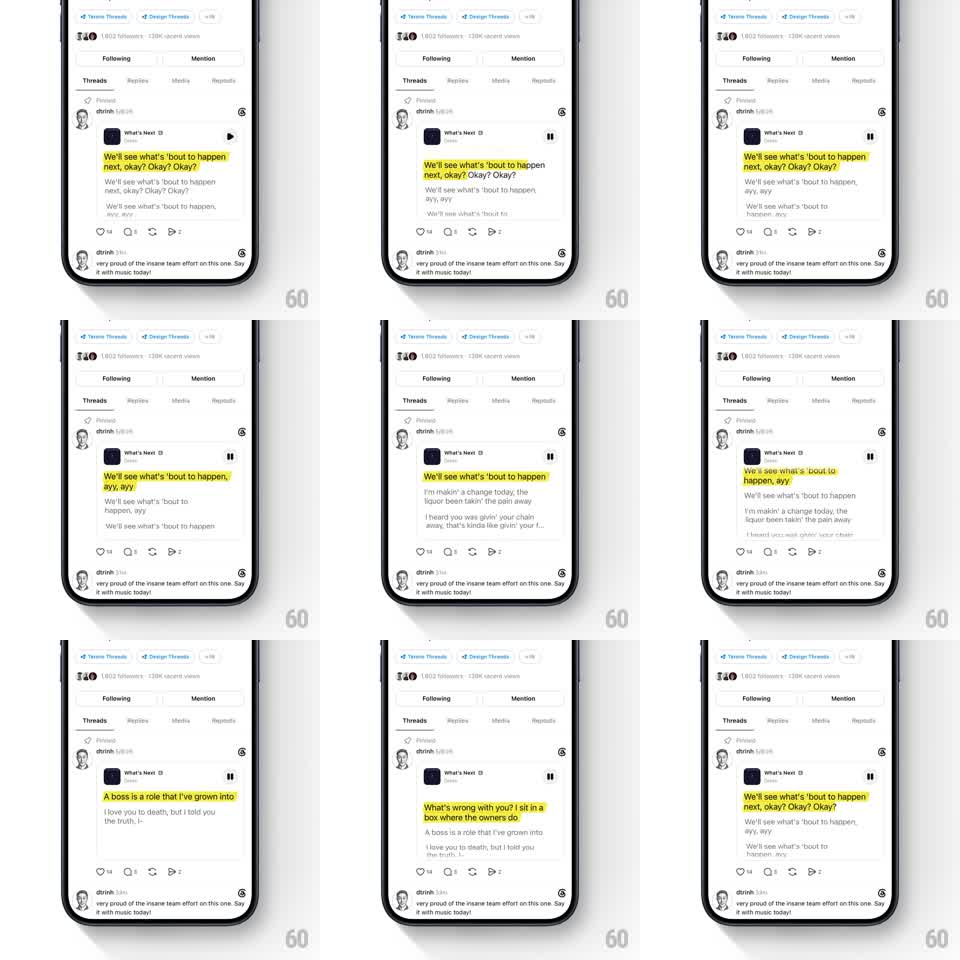

Media
Frame-by-frame

Rebuild this animation 1:1: Threads' lyric sync - under a playing track post, a yellow highlight block slides and reshapes line by line to track the active lyric while upcoming lines wait in grey below.

Rebuild this animation 1:1: Threads' lyric sync - under a playing track post, a yellow highlight block slides and reshapes line by line to track the active lyric while upcoming lines wait in grey below.
## Integration
Integration: stack-agnostic spec - springs given as stiffness/damping, timed motions as duration + curve; map every value to your framework and animation library of choice.
## Scene
Threads profile page with a pinned post: a small dark track pill ("What's Next") with cover thumb and a play/pause toggle, then 3-4 lines of lyric text. The active line is black text on a yellow highlight block; upcoming lines are plain grey.
## Motion spec
Pattern: karaoke highlight that morphs between lyric lines in time with the song.
- The yellow block hugs the active line's exact width and two-line height when a line wraps.
- On line change the block slides and reshapes to the next line (250ms, spring ~280/20) - width, height, and position all tween together so it feels like one living blob.
- The newly active text flips to black as the block arrives; the previous line fades to grey 100ms later.
- The block has a faint jitter pulse on beat (scale 1.01, 120ms) - subtle, never distracting.
- Play/pause toggles instantly; pausing freezes the block mid-line.
## Calibration
- The highlight leads the ear slightly - it should land a hair before the vocal does.
- Yellow is highlighter-bright; nothing else on the screen uses it.
## Reduced motion
Highlight crossfades between lines (200ms) without reshaping travel.
## Don't miss
- The block's shape is computed from real text layout - it wraps with the line, not a fixed rectangle.
- Grey upcoming lines shift up smoothly as lines complete - the list breathes.